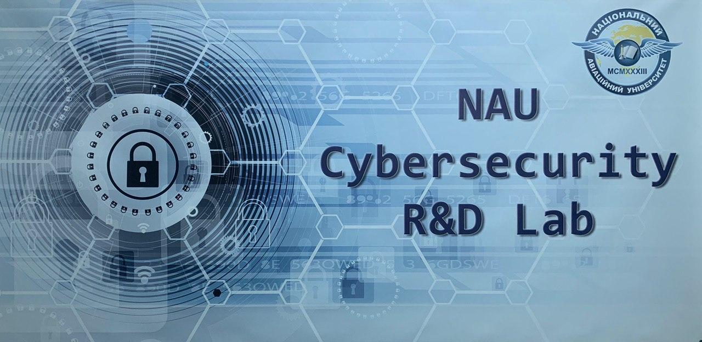
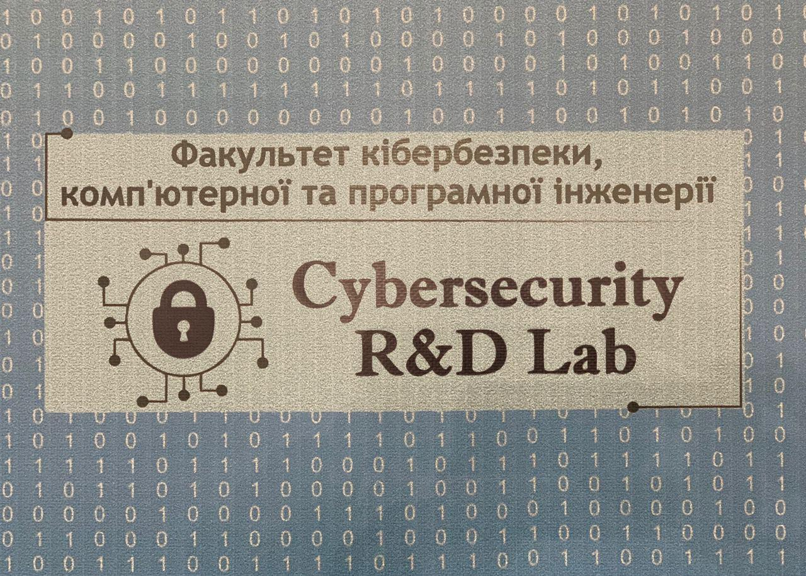
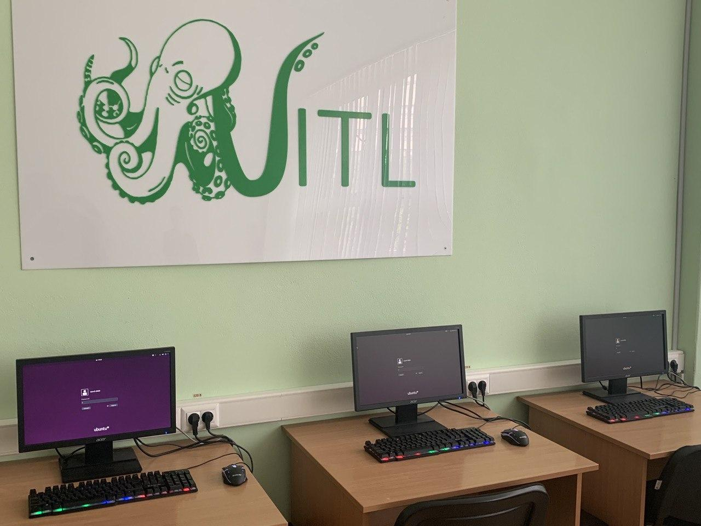
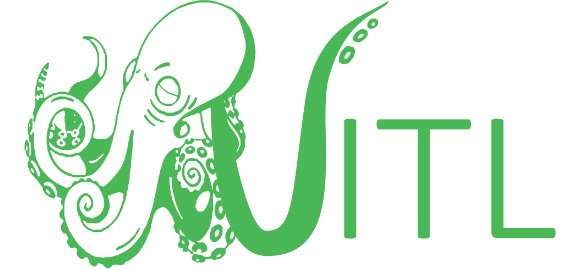
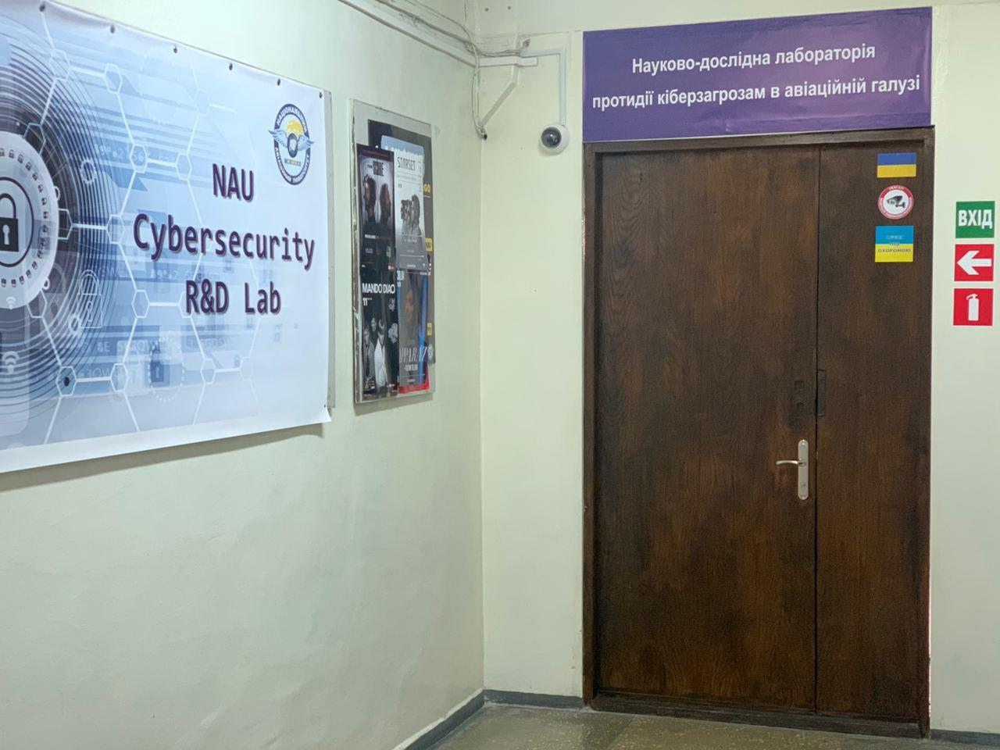

About Us
Research laboratory of cyber threats counteraction in aviation (NAU Cybersecurity R&D Lab) was founded in October, 2019 as the structural unit of the Faculty of Cybersecurity, Computer and Software Engineering in National Aviation University (Kyiv, Ukraine). It was based on Cybersecurity Research Group formed in September, 2012.
The main objectives of NAU Cybersecurity R&D Lab are following:
- research study in cybersecurity;
- development, expertise and assessment of cybersecurity products / services;
- organization of scientific and practical conferences / seminars / trainings in cybersecurity;
- improvement cybersecurity level in aviation and other sectors of critical infrastructure;
- support of young cybersecurity researchers in National Aviation University and Ukraine;
- cybersecurity popularization on both local and international level.
DSc, PhD, Associate Professor Scientific Adviser of the Lab
PhD, Associate Professor Chief of the Lab
DSc, PhD, Associate Professor Project Manager / Lecturer
PhD, Associate Professor Researcher / Lecturer
PhD, Associate Professor Researcher and Consultant
PhD, Associate Professor Researcher / Lecturer
PhD Student, Junior Researcher
PhD Student, Technical Specialist / Lecturer
PhD Student, Developer and Junior Researcher
Student, Developer and Technical Specialist
PhD Student, Junior Researcher and Technical Specialist
Developer and Technical Specialist
- development and optimization of web-sites / web-applications;
- penetration testing and security analysis of web-sites / information-communication systems / software-hardware complexes;
- information security / cybersecurity audit;
- encryption algorithms / PRNGs / hash-functions development, software / hardware realization and security level assessment against various attacks;
- software realization of algorithms of any complexity in C / С++, Python, Java;
- designing and implementation of printed circuit boards and antennas, digital electronics of any complexity;
- deep investigation of software / hardware solutions in IT, cybersecurity, telecommunications;
- designing and conducting training courses, workshops and laboratory testing in information security (cybersecurity) / CIIP / cryptography / computer networks / AI / ML / Big Data etc.
If you are interested for cooperation, please contact us!

Scientific Projects
- Quantum cryptography methods for ensuring confidentiality of critical information infrastructure of the state is project of young scientists funding by Ministry of Education and Science of Ukraine from October, 2017 till September2019. The main goal of this project was improving data confidentiality and privacy in critical infrastructure by developing new PRNG, protocols of key distribution and encryption. The project was completed successfully and results were implemented in various state and private companies (DSc Sergiy Gnatyuk was Manager / Lead Researcher, PhD Tetyana Okhrimenko (Zhmurko) was Principal Investigator / Senior Researcher of this project);
- Methods and tools for quantum key distribution implementation in critical infrastructure of the state is collaborated research project of scientists from State Scientific and Research Institute of Cybersecurity Technologies and Information Protection and NAU Cybersecurity R&D Lab funding by State Service of Special Communications and Information Protection of Ukraine. The main goal of this project is requirements defining for future state quantum cybersecurity system based on QKD and secure block encryption. This project started in December, 2019 and must be finished in October, 2020 (DSc Sergiy Gnatyuk is Co-Manager / Chief Researcher of the project);
- System for ensuring confidentiality of critical information infrastructure of the state based on quantum deterministic protocols is project of young scientists funding by Ministry of Education and Science of Ukraine. The main goal of this project is constructing the system for ensuring confidentiality of critical information infrastructure of the state by methods of quantum and post-quantum cryptography. The project began in January, 2020 and must be finished in December, 2021 (DSc Sergiy Gnatyuk is Manager / Lead Researcher, PhD Tetyana Okhrimenko is Principal Investigator / Senior Researcher of this project);
- Methods, models and tools for security events and incidents management for detecting and preventing cyber attacks on critical infrastructures of digital economics is international collaborated research project of scientists from Almaty University of Power Engineering and Telecommunications and NAU Cybersecurity R&D Lab funding by Ministry of Digital Development, Defense and Aerospace Industry of the Republic of Kazakhstan. The main goal of this project is framework development for effective incident management (detect, identify, response, prevent, predict etc) in sectors of critical infrastructure of the state. The project was started in May, 2020 and it must be completed in April, 2022 (DSc Sergiy Gnatyuk is Lead Researcher of the project);
- 5G-Xcast: Broadcast and Multicast Communication Enablers for the Fifth Generation of Wireless Systems is Horizon 2020 international research grant project funding by European Commission from July, 2017 till June 2019 (H2020-ICT-2016-2 call, grant number 761498). This project has paved the way towards the use of 5G broadcast and multicast. 5G-Xcast has developed a conceptually novel and forward-looking 5G network architecture for large scale immersive media delivery through the use of point-to multipoint transmissions. This project was completed successfully as well as results were implemented in companies of EU (DSc Roman Odarchenko was Lead Researcher of the project);
- 5G-TOURS: SmarT mObility, media and e-health for toURists and citizenS is Horizon 2020 international research grant project funding by European Commission. The goal of 5G-TOURS is to get the European 5G Vision of “5G empowering vertical industries” closer to commercial deployment with highly innovative use cases involving cross-industry partnerships. The knowledge acquired from this project, and especially with respect to the development of applications enabled by 5G technology that are needed for the envisioned use cases and deployment of three large-scale field-trials. This project started in July, 2019 and must be completed in June, 2022 (DSc Roman Odarchenko is Lead Researcher of the project).
- Cyber incident response platform for 5G cellular networks is international collaborated research project of scientists from Caucasus University and NAU Cybersecurity R&D Lab funding by Shota Rustaveli National Science Foundation. Main idea of the project is to develop novel AI / ML based 5G Cybersecurity platform to provide the highest cybersecurity level and to ensure all subscribers in overall safety. The project was started in August, 2020 and it must be completed in July, 2021 (DSc Sergiy Gnatyuk and DSc Roman Odarchenko are Lead Researchers of the project).

Training Center
The pilot project of the Training Center of NAU Cybersecurity R&D Lab is NAU Penetration Testing School. It was beginning in March, 2020, but due to COVID-19 pandemic quarantine educational process is conducting on-line.

Scientific Events
-
NAU Cybersecurity R&D Lab was one of the main organizer of 1st International Conference on Cyber Hygiene & Conflict Management in Global Information Networks (Ukraine, Kyiv-Lviv, November 29-30, 2019), included 2 following specialized workshops:
- International Workshop on Conflict Management in Global Information Networks (CMiGIN-2019) was hold in Lviv on November 29, 2019. CMiGIN-2019 was intended to attract researchers with a strong background in the field of on conflict management in global information networks with the main focus on analytical processing, optimization and control of global information networks. The main workshop sections:
- Conflict Management on the Internet
- Analytical Processing of Social Networks
- Optimization of Online Information Networks
- Control of Global Information Networks
- Social Networking Services
- Digital Content Processing
- International Workshop on Cyber Hygiene (CyberHygiene-2019) was hold in Kyiv on November 30, 2019. CyberHygiene-2019 was intended to attract researchers with a strong background in the field of on cyber hygiene and cybersecurity, ICT infrastructures and systems, CIIP, social engineering etc. The main workshop sections:
- Security and Privacy of Critical Applications
- ICT Infrastructures and Systems
- Management of Cyber Incidents, Warfare and Conflicts
- Social Engineering and Identity Theft Protection Techniques

Our Partners
| 
|
Ukrainian Information Technology Laboratory (UITL) provides trainings and workshops related with up-to-date IT and applications. UITL have supported Training Center of NAU Cybersecurity R&D Lab organization including computer (hardware and software) and network maintenance. Also, lecturers and researchers of our Lab cooperate with UITL in trainings organization. |
|
|
The Cipher company provides services in information security and banking technologies in Ukraine since 1995. The main activities are data protection of organizations, payment systems of banks, implementation and maintenance of e-banking. Our Lab cooperates with Cipher in the research study and development of cryptographic information security systems. |
|
|
SCSA is international organization for development of scientific and practical directions in cybersecurity as well popularization cybersecurity on both local and international levels. We have strong cooperation with SCSA for many years in development and security improvement of quantum and post-quantum cryptography systems. |
|
|
MECS Press is an independent publisher of peer-reviewed journals covering a wide range of academic disciplines. MECS Press publishes 10 open access, peer-reviewed journals and many of them are included in the leading abstracting and indexing databases (Scopus, Inspec, EBSCO, Baidu Wenku etc). Researchers of our Lab participate in Editorial Boards of MECS Press journals and Program Committee of MECS Press conferences, and other collaborated activities. |
|
|
Vocational Training Center (Centrum Kształcenia Zawodowego, CKZ – in Polish) is educational and research organization, which oriented on training courses and fellowships in programming, computer systems and networks, cybersecurity. We have strong cooperation with CKZ in both directions: the internships for scientists of our Lab as well as collaborated research projects in cybersecurity (cryptography, CIIP, WSN). |
Contacts
| 1, Liubomyr Guzar Ave, Building 6 Office 215 (Headquarters)Office 213 (Training Center) | |
| +38 (044) 406 75 37 | |
| cyber.lab@nau.edu.ua (general information) s.gnatyuk@nau.edu.ua (partnership & cooperation) | |
| https://www.facebook.com/NAUCyberLab/ |
